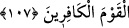

müşkili’l-ahbâr adlı eserde böyle geçmektedir.
107. Bu, onların dünya hayatını âhirete tercih etmelerinden ve Allah’ın kâfirler
topluluğunu hidâyete erdirmemesinden ötürüdür.
“Bu,” imandan sonra inkâr “onların dünya hayatını âhirete” âhiret nimetlerine
“tercih etmelerinden ve” diğer bir sebep olarak da her şeyi kuşatan ilminde “Allah’ın
kâfirler topluluğunu hidâyete erdirmemesinden” imana hidâyet ettirmemesinden ve
onları zoraki bir hidâyetle imanda sebat ettirmemesinden “ötürüdür.” Onun için onları
doğru yoldan sapmaktan, ilahî gazaba götüren şeylerden ve büyük azabdan kurtarmaz.
Bu iki durumdan biri, yani dünyayı âhirete tercih etmeleri ya da Allah’ın onları zoraki
bir şekilde hidâyete erdirmesi olmasaydı böyle olmazdı. Fakat ikincisi hikmete muhalif
olduğu gibi birincisi de meydana gelmeyen durumlardandır.
108. İşte onlar Allah’ın, kalplerini, kulaklarını ve gözlerini mühürlediği
kimselerdir. Ve onlar gafillerin kendileridir.
“İşte onlar” zikredilen çirkin vasıfları taşıyan kimseler “Allah’ın, kalplerini,
kulaklarını ve gözlerini mühürlediği kimselerdir.” Kalblerine mühür vurdu ki hak sözü
bulamasınlar, kulaklarına mühür vurdu ki pak sözü işitmesinler, gözlerine mühür vurdu
ki Hakk’ın kudretinin eserlerini görmesinler.
“Ve onlar gafillerin kendileridir.” Gaflette kemâl üzeredirler. Çünkü işlerin sonunu
düşünmemekten daha büyük bir gaflet yoktur.
109. Hiç şüphesiz onlar âhirette ziyana uğrayanların ta kendileridir.
“Hiç şüphesiz onlar âhirette ziyana uğrayanların ta kendileridir.” Çünkü
ömürlerini zâyî edip ebedî azâba sebep olacak davranışlara sarf etmişlerdir. Ömür